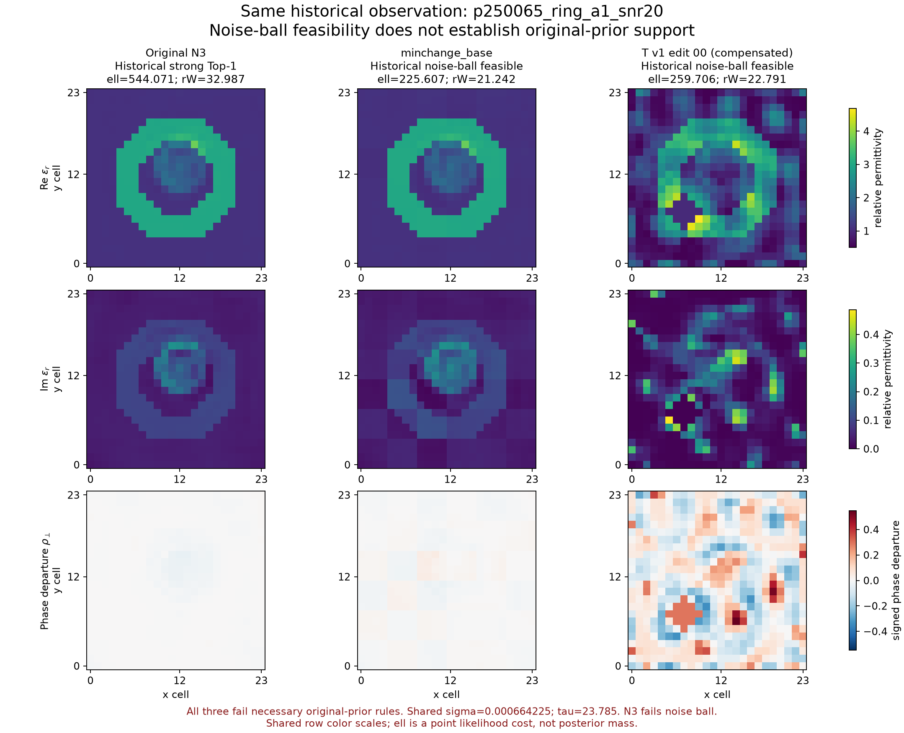
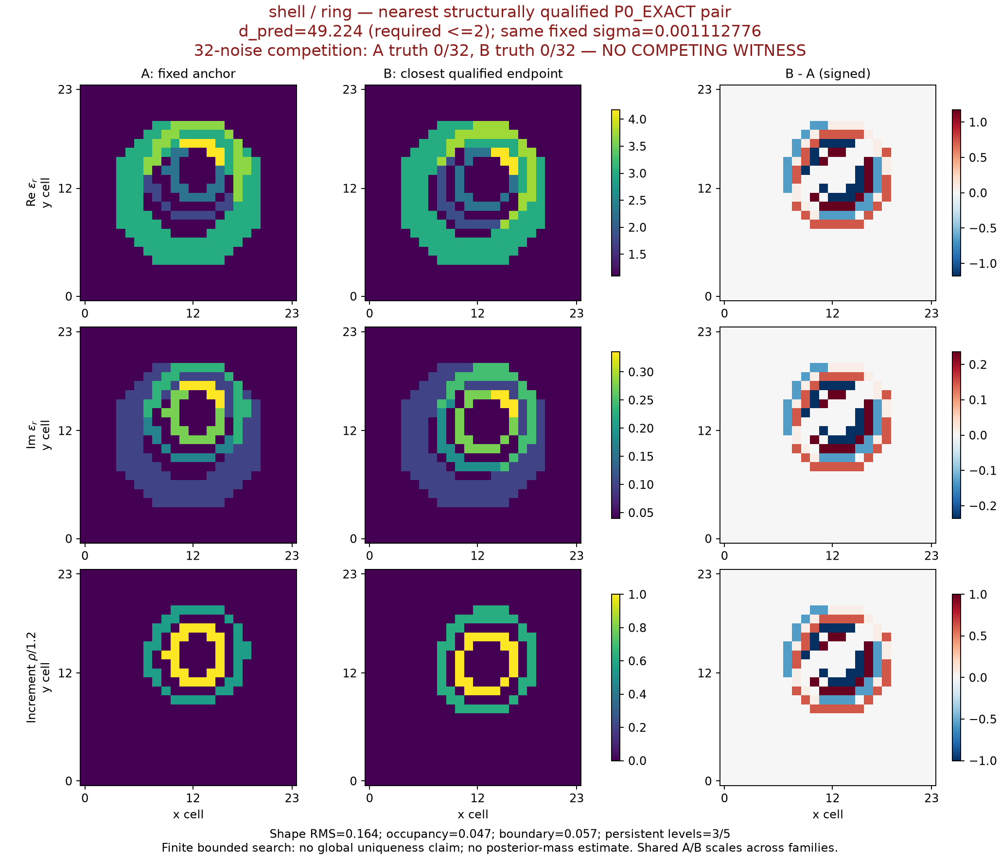

原材料先验内，找到了竞争解释吗？
本轮没有找到。已停止 E2 并封账。
历史 T/G 的低残差多图没有保持原 A25/A30 材料先验。新原生成器搜索中的不同结构，仍被当前 Maxwell 测量明显区分。这个有限负结果不证明不存在其他解。
N3 保留为强 Top-1；不扩噪声、不用绝对空气孔、不追加预算追求正结果。
E0 · 已完成
0 新物理。64 TRAIN parents /512材料重放误差0。8,064缓存比较，1,632结构合格，0组接近预测。
E1 · 已完成
45 states /680复RHS，含两次实现故障。新搜索最近结构对距离49.2236；四对两端各32次噪声，均0竞争。
E2 · 未执行
没有两组原先验竞争见证，不运行共同corrector四臂比较，不声称新生成策略有收益。
N3 与历史补偿解，问题在哪？
同一 p250065_ring 观测。N3 的材料成像好，但它不是严格 P0_EXACT。历史最小改动修正能进噪声球；历史 T 补偿解也能进球，却明显违背原先验。三者不能被解释成同样合理的高概率材料世界。

原生成器内的负结果
保持24×24 TM/VIE、8源、32接收、gain=1、原复噪声和同一sigma。下面最近的新结构pair，预测距离仍49.22，而本轮优先寻找的是≤2。d不是材料距离，表示测量噪声尺度上的预测差。

查看四个anchor的完整实部、损耗、rho及差分 →
结论与限制
- 原先验回放正确，不代表它一定支持当前目标所需的多解。
- 只做有限生成器参数secant搜索，不能证明全局唯一；完整PC-SP与C_P均未激活。
- 两次实现失败及第二轮搜索中心的协议偏差完整保留；没有补跑改成正结果。
- 候选概率为null，点似然比不是posterior mass。数值full求值不是连续Maxwell证书。
- 建议下一阶段优先先验保持的N3最小必要修正；本轮不启动。
可核验文件
完整中文研究报告 · 精确指标 · 冻结协议 · 完整账本 · 固定噪声重放 · 失败与偏差 · 封账
新阶段原始数组与复现证据包
独立目录 prior_constrained_20261015；历史 T/G/A30 结果及预算未改。旧development已暴露，新4anchor是研究校准台而非独立确认性测试。